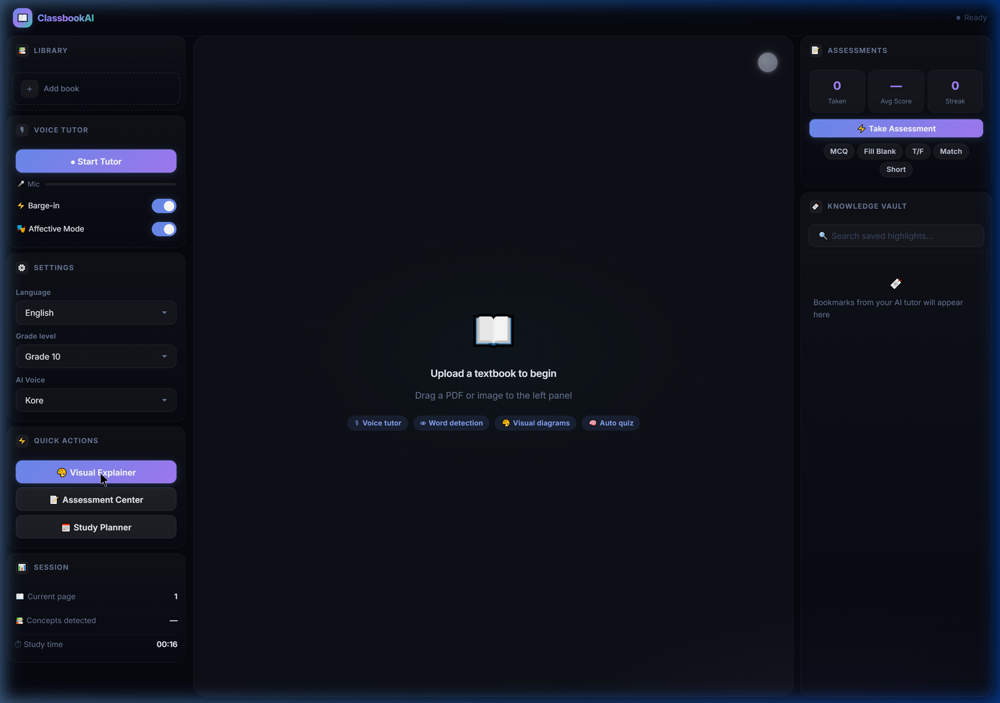
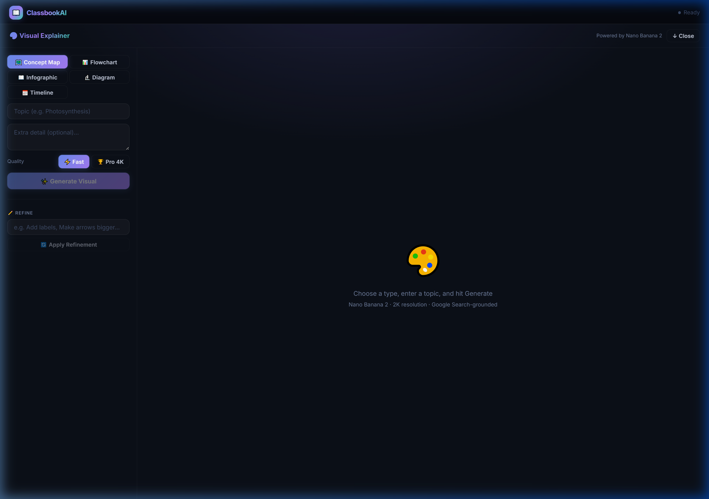
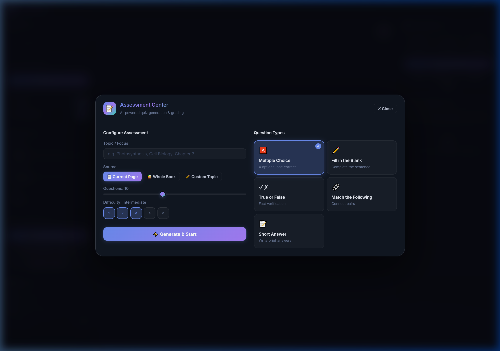

KlassroomAI transforms static PDFs into interactive AI learning environments. Upload any textbook and get a real-time voice tutor that sees your pages, hears your questions, and teaches with zero latency.

KlassroomAI doesn't wait for you to ask. It watches, listens, and proactively guides your learning.
Talk to your textbook like you'd talk to a human tutor. Powered by Gemini 2.5 Flash Native Audio, the AI responds with natural, warm voice in under 500ms. Interrupt it mid-sentence — it stops, listens, and adapts.
"Can you explain photosynthesis on this page?"
"Of course! Looking at the diagram on page 42, photosynthesis is the process by which plants convert light energy into..."
Some concepts need pictures. Say "Show me the Krebs Cycle" and the agent generates an infographic, flowchart, or concept map on the fly using Nano Banana 2 — grounded by Google Search for accuracy.

The agent autonomously triggers quizzes when it detects you've finished a topic. Choose from MCQ, Fill-in-the-Blank, True/False, Match, and Short Answer — all generated from your actual textbook content.

Using PDF.js TextLayer mapped pixel-perfect over the canvas, every word in your textbook becomes interactive. Click for instant dictionary lookups, highlight to save to your Knowledge Vault, or ask the AI to explain the entire page.
The powerhouse of the cell — organelles that generate most of the cell's supply of ATP.
Gemini decides when to fire each tool — no user prompting required.
Auto-fires MCQ, True/False, Fill-in-the-Blank after topics
Google Search-grounded dictionary with IPA & etymology
Creates infographics and concept maps via Nano Banana 2
Saves concepts to the Knowledge Vault for revision
Recommends what to study next in logical order
Bullet-point summaries of dense textbook pages
Simplifies hard concepts with everyday analogies
Side-by-side comparisons of similar concepts
Front/back revision cards for spaced repetition
Speaks, clicks, reads
PDF.js · WebAudio · Mic
Cloud Run · Agent Logic
Native Audio · Vision · Search
Upload any PDF. Start talking. Let the AI tutor guide you.
🚀 Launch KlassroomAI